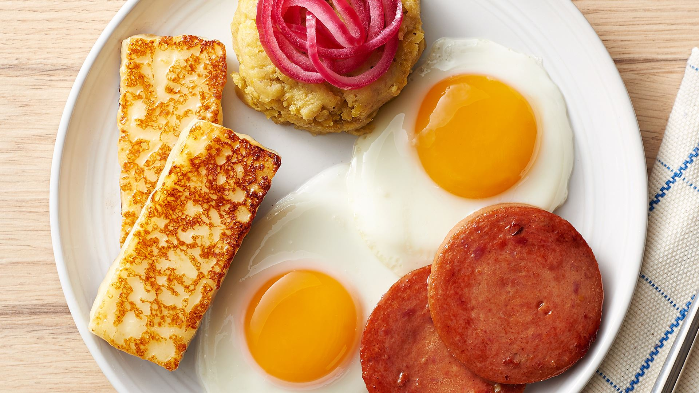

Mangú con Los Tres Golpes

Description
This dish has been a breakfast staple of Dominican Republic for ages. You can find this
dish in restaurants and homes alike. This dish is mashed plantains with the three strikes(cheese, salami, and eggs)!
Ingredients
- 1 large red onion
- 3/4 cup of water
- 1/2 cup of vinegar
- 1 tsp. of salt
- 3-4 green plantains
- 4 tbsp. stick butter
- 1 tbsp. cooking oil
- Queso de Freir (Cheese for frying, white)
- Salami
- 2 eggs
Steps
- Peel and slice the plantains into quarters
- Add plantains to pot and boil in enough water to cover them, add salt before pot boils
- After boiling plantains until tender, remove from water and mash while mixing in butter and water until there are few to no lumps
- In a small bowl add sliced onions, vinegar and salt, let sit for 5 minutes
- Heat cooking oil in pan over low heat, add onions and cook for 1-2 minutes
- Fry 2 1/4 slices of cheese
- Fry 2-4 slices of Salami
- Fry 2 eggs
- Serve mangú with onions on top and the fried cheese, salami, and eggs on the side
Buen Provecho! (Enjoy your meal!)